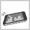
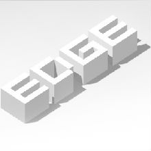
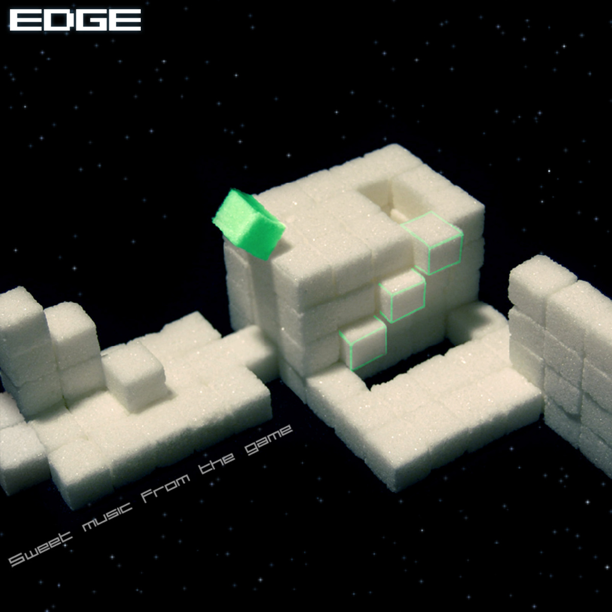

EDGE 手册
游戏简介：
方块边缘（EDGE）是一款由 mobigame 制作并发行的手机游戏，其中的bonus levels和PC版是由 Two Tribes 制作并发行的。 Connect2Media 和AMA是发行Java版的。玩家需通过控制一个方块，尽量拿到所有棱柱，并尽快到达终点。在中途的冒险中，你会碰到很多机关，并慢慢熟悉游戏。
游戏支持的手机系统有iOS、Android和Java。
欢迎来到 EDGE Fans！
本站是讨论 EDGE 以及 EdgeMod 的地方。
赶紧点击左方的创建新账号免费注册成为一名会员或登录以享受以下特权：
- 制作并上传你惊人的 EdgeMod！
- 为其他的 EdgeMod 评分和/或留言！
- 参与激烈的论坛讨论！
- 显示你还没有看过的极好的 EdgeMod/新文章/话题/回复/更新！
- 成为一名管理员！（很遗憾我们暂时不需要新的管理员）
本站管理员：Mygod, WEGFan, jackchen2345
下载 EDGE
PC 版
- EDGE 旧破解版 V1.0.1822.6305 及其配套的 EDGE Epic 旧版；
- 在 Steam 上下载 EDGE V1.0.2052.6330 试用版，并安装配套的 EDGE Epic；（注：可能无法存档！）
- 直接下载 EDGE V1.0.2483.7086 正版，并通过安装 EDGE Epic 来破解；
- EDGE 无 DRM 版 V1.0.2893.8522 及其配套的 EDGE Epic；
- 在 Steam 上购买 EDGE V1.0.2894.8583 正版，并安装配套的 EDGE Epic。
各个版本的比较：
| 版本 | 免费 | bonus | extended | 成就 | 新功能* | EdgeTool 支持 | EDGE Epic |
|---|---|---|---|---|---|---|---|
| 1.0.1822.6305 (破解) | √ | √ | × | √ | × | √** | √* |
| 1.0.2052.6330 (试用) | √ | √ | × | × | √* | √* | √* |
| 1.0.2483.7086 (破解) | √ | × | √ | √ | √ | √ | √ |
| 1.0.2893.8522 (无DRM) | √ | √ | √ | × | √ | √* | √ |
| 1.0.2894.8583 (正版) | × | √ | √ | √ | √ | √* | √ |
新功能：指 Shift + Esc 重启关卡，DarkCube、高级相机模式等功能。√* 表示不支持高级相机模式。
EdgeTool支持：√* 表示不支持浏览成就，√** 表示 EdgeTool V6.3.19.4 及以下版本支持浏览成就。
EDGE Epic：一个免费的给你的 EDGE 添加所有官方发布关卡的补丁包。√* 表示该版本的 EDGE Epic 不再更新。
无DRM版：来自 Humble Bundle for Android 或 Humble Weekly Sale，没有版权保护的 EDGE 正版。
推荐安装：1.0.2483.7086 破解版来刷成就，1.0.2893.8522 无 DRM 版来玩关卡。
Mac 版
无 DRM 版
Linux 版
无 DRM 版
iOS 版
- Edge V2.00, Edge EX V2.00;
- Edge V2.10,Edge EX V2.10.
- iTunes 的 App Store 正版：Edge、Edge EX。
Android 版
- EDGE V1.92.4、EDGE Extended V1.92.4。
- Google Play 正版：EDGE、EDGE Extended。
Java 版（注：由于游戏有多种分辨率，游戏本体请自行搜索下载）
增强 EDGE 功能
以下页面介绍了给 EDGE 增强功能（如安装新关、改善外观等）。如果你对开发 EdgeMod 感兴趣，看看开发者参考指南。
EdgeTool

EdgeTool 是一款增强您的 EDGE 游戏体验的实用工具，它可以帮助您安装新关卡和 mod，也可以用来浏览你 EDGE 成就。
功能
- EdgeMod——安装/卸载 EdgeMod；
- 关卡——浏览游戏中的所有关卡，以及它们评级的标准（S+ 时间）；
- 成就——为破解版的成就系统提供用户界面支持；
- 开发者工具——作为 EDGE 唯一一款公开发布的辅助工具，开发者工具是必不可少的。——否则你就等着开着十六进制编辑器痛苦地修改吧！
现在该干嘛？
立即下载 EdgeTool！
或是……
学习怎么自己制作 EdgeMod！
命令行参数
EdgeTool 可供使用的命令行参数有：
| {.exe 文件} | 指定 EdgeTool 启动时加载的游戏文件，如果设置了 -forceClose 则此项不会更新设置，此项也会影响之后的 -lg 选项。 |
| {.edgemod 文件} | 指定 EdgeTool 启动时在当前游戏下加载的 EdgeMod 文件，如果设置了 -forceClose 则此项无效。 |
| {其他文件} | 指定 EdgeTool 要(反)编译的文件。 |
| -fst | 无论如何显示 EdgeTool 主窗口。 |
| -fc | 无论如何都在(反)编译结束之后结束程序。 |
| -new | 指定编译之后的 .etx 纹理文件时使用新版格式。 |
| -old | 指定编译之后的 .etx 纹理文件时使用旧版格式。 |
| -dir "{目录}" | 指定编译之后的文件时输出到指定目录。 |
| -dir "" | 指定编译之后的文件时输出到与该文件所在目录。（默认） |
| -lg | 运行一次游戏。 |
| -c | 打开一次选择(反)编译文件的窗口。 |
| -rke | 打开一个录制 KeyEvent 的窗口。 |
| -cml | 打开一次转换手机版关卡文件的窗口。 |
| -c4u | 检查一次更新。 |
在 -forceStart 与 -forceClose 没有设置的情况下，如果有其他文件要(反)编译且没有设置任何 .exe 文件，也没有设置任何 .edgemod 文件，在(反)编译结束后 EdgeTool 会结束执行。
由于 EdgeTool 是 GUI 程序，在命令行下运行不会有任何输出，因此你需要使用随 EdgeTool 附赠的来自 World of Goo Console Debugger 中的 Debug.exe，只需在所有的命令行参数后添加这一段即可：（无需空格）|Debug
样例：把文件拖动到这里来(反)编译.bat
@echo off cd "这里填写EdgeTool所在的目录" EdgeTool %1|Debug pause
你可以使用这个功能与其他程序结合，如使用 Notepad++ 中的 NppExec 插件，在运行中输入：
"这里填写EdgeTool的路径" "$(CURRENT_DIRECTORY)\$(FILE_NAME)"
然后就能按下 Ctrl+F6 来快速编译了，如下图所示。
Resources/Library/unxwb.exe
此工具由 Luigi Auriemma 制作，全名 XWB/ZWB files unpacker 0.3.4（XWB/ZWB 文件解包器 0.3.4），用于手动处理 audio 文件夹以进行较为复杂的操作。
编译手机版
EdgeTool 9.1 引进了一个狂拽炫酷屌炸天的功能叫做编译手机版，有了它你可以将你该死的 PC 版关卡移植到手机上！
编译手机版需要以下内容：
- PC 版 EDGE；
- 安装 EdgeTool 9.1 或更高版本，并已正确加载一个有效的 PC 版游戏；
- 下载并解压你的手机操作系统对应的项目，你可以在下载 EdgeTool 的地方找到它们；
- 如果你想要编译两个 EDGE Epic 预设项目，你还需要安装 EDGE Epic；
- 如果你要编译安卓版，你还需要 Java x86，如果你只装了 x64，EdgeTool 处理完成后你可能需要手动双击项目下的 compile.bat 进行编译。
编译手机版十分简单，只需在 EdgeTool 中点击 工具箱 - 编译手机版，然后选择要使用的项目文件即可。在你下载的项目中应该已经包含了三个预设项目。
编译完成后项目文件夹下会出现 net.mobigame.edge.epic.apk（安卓版）或 EDGE Epic.ipa（iOS 版，安装需要越狱），你只需把它安装到你的手机即可！
P.S. 由于 iOS 版的音乐格式与 PC 版不同，编译速度将明显减慢；最后可能会卡在“即将完成……”一段时间，请耐心等待。
如果你想研究如何制作自己的项目/加载其他的关卡，请继续阅读……
更新方式
关卡列表更改可能会导致存档的丢失，请记得备份存档。（这需要 root/越狱，存档在哪里？）
对于 iOS 版，在 iTunes 上如果看到的是“移除”而不是“更新”，请在资料库里删除 EDGE Epic 后重新拖入即可。
.xml 项目
编译手机版的项目文件扩展名 .xml，它是一个标准的 XML 文件，存放了项目的若干配置信息。
其根元素为 project 元素，其属性如下：
| 属性名 | 数据类型 | 备注 |
|---|---|---|
| preset | 特殊 | 可选，默认为 android。表示项目使用的预设配置，android 表示安卓版，ios 表示 iOS 版。 |
| keep | 正则表达式 | 可选。表示哪些文件要保持原状不作修改。（被匹配的文本是原文件的文件名）不填表示修改全部支持顶的文件。 |
<project preset="ios" keep="." />
project 元素有两个可选的子元素为 levelpackA 和 levelpackB，每个子元素分别可以包括最多 48 与 17 个 level 元素，每个元素定义了一个关卡，超过个数限制的元素将被忽略。
这些 level 元素与一般 mapping.xml 里的 level 元素有一点小区别：
- 被省略的 level 元素（即不满限制的情况下的最后几关）或被省略的 @filename 将会被一个 PLACEHOLDER 关代替，这关可以瞬间过关来保证玩家可以完成游戏；
- @leaderboard_id 不会起任何作用，将会被忽略。
compile.bat
compile.bat 为 EdgeTool 生成资源完成后显示“即将完成……”时调用的编译指令。你也可以用它做一些额外的事情。
@java -jar SYSTEM.EAD/apktool.1.5.2.jar b src @java -jar SYSTEM.EAD/signapk.jar SYSTEM.EAD/testkey.x509.pem SYSTEM.EAD/testkey.pk8 src/dist/edge.apk net.mobigame.edge.epic.apk
@7za a -tzip EDGE_Epic.ipk Payload iTunesArtwork iTunesMetadata.plist
自定义成就
EdgeTool 对所有成就的数据都存放在其目录下的 Resources 目录中，该目录下有 Achievements.xml 与若干张图片。
Achievements.xml 是存放成就最重要的数据的地方，它的根元素是 achievements，下有若干个 achievement 子元素，每个元素表示一个成就，其属性如下：
| 属性名 | 数据类型 | 备注 |
|---|---|---|
| apiname | 文本 | 必填。成就的 API 名称，同时这也是要使用成就图片的文件名（不含 .jpg 扩展名）。 |
| title | 文本 | 必填。成就的名称。 |
| points | 32位整数 | 必填。成就的点数。 |
| description | 文本 | 必填。成就的具体介绍。 |
| help | 文本 | 可选。成就的视频帮助链接。如果不填则在 EdgeTool 中帮助图像会变成灰色。 |
<achievement apiname="FinishedLevelsStep1" title="Millimeter" points="6"
description="Complete 12 normal levels"
help="http://www.tudou.com/playlist/id/15540683/" />下载 EdgeMod
按照评分选择 EdgeMod
按照总下载量选择 EdgeMod
按照分类选择 EdgeMod
存档位置
Windows
旧版破解的存档在：{游戏安装目录}\{你的玩家名}_swarm\savedata.ttsav
成就数据在：{游戏安装目录}\{你的玩家名}_swarm\wins\
其中玩家名存放在：{游戏安装目录}\playername.txt
新版破解的存档在：%ProgramData%\OUTLAWS\{你的玩家名}\38740\storage\savedata.ttsav
成就数据在：%ProgramData%\OUTLAWS\{你的玩家名}\38740\stats\achievements.ini
其中玩家名存放在：{游戏安装目录}\steam_otl.ini，其中Settings节的UserName中，即第35行UserName=之后。
如果你的电脑无法自动定位%ProgramData%，请手动在以下目录中找：
XP及以下用户：C:\Documents and Settings\All Users\Application Data\OUTLAWS\{你的玩家名}\38740\storage\savedata.ttsav
Vista及以上用户：C:\ProgramData\OUTLAWS\{你的玩家名}\38740\storage\savedata.ttsav
Steam版的存档在：{Steam安装目录}\userdata\{你的Steam用户名ID}\38740\remote\savedata.ttsav
其他版本的存档在：%LocalAppData%\Two Tribes\{游戏标题}\savedata.ttsav
其中游戏标题就是你启动游戏后标题栏中显示的东西，通常情况下是下面三个之一：EDGE, EDGE Demo, EDGE Epic。
如果你的电脑无法自动定位%LocalAppData%，请手动在以下目录中找：
XP及以下用户：%userprofile%\Local Settings\Application Data\Two Tribes\{游戏标题}\savedata.ttsav
Vista及以上用户：%userprofile%\AppData\Local\Two Tribes\{游戏标题}\savedata.ttsav
以上各版本的存档可以互相移动、覆盖，存档的格式不明。
Android
- EDGE: /data/data/net.mobigame.edge/files
- EDGE EX: /data/data/net.mobigame.edge.extended/files
- EDGE Epic: /data/data/net.mobigame.edge.epic/files
iOS
/var/mobile/Applications/{某个随机的 GUID}/Documents（在同目录下应当有 Edge.app/Edge EX.app/EDGE Epic.app）
游戏设置
在 main menu 中点击 options，或在关卡中按下 Esc 或点击上方的箭头即可进入设置，在设置中有以下几项设置。
sounds（音效），指定是否要打开音效。
music（音乐），指定是否要打开音乐。
effects（特效），指定是否要打开特效。打开特效后游戏时吃棱柱屏幕会闪一下，过关动画和暂停时会有模糊特效。如果电脑特慢可以关闭这一项。
full screen（全屏），指定是否要在全屏模式下进行游戏。按下 Alt+Enter 也可切换全屏/窗口模式。
up key（上键），1.0.2483.7086及以上的版本有此选项，指定按上键时是朝哪个方向翻滚，NE 表示东北（右上），NW 表示西北（左上）。修改此项的同时关卡中的小地图也会旋转。
credits（关于），看那些又长又臭的制作者名单，进入后按上下键或 W、S 或鼠标点击可以加快滚动速度，按 Esc 退出。
当然可以进行配置的远不止这些，如果你不嫌麻烦，你也可以修改 ini 文件来进行更强的配置。
settings.ini
游戏更多设置存放在 settings.ini 中，你可以在 EdgeTool 中点击 工具箱 - 打开 EDGE (版本) 的 settings.ini 打开这个文件。你需要玩过一次游戏才会出现这个文件。
手动定位 settings.ini
你也可以手动定位 settings.ini。Windows 下它在 %LocalAppData%\Two Tribes\{游戏标题}\settings.ini，其中游戏标题就是你启动游戏后标题栏中显示的东西，通常情况下是下面三个之一：EDGE, EDGE Demo, EDGE Epic。如果你使用的是 Mac OS X，它在 ~/Library/com.twotribes.edge/settings.ini。
如果你的电脑无法自动定位%LocalAppData%，请手动在以下目录中找。
XP及以下用户：%userprofile%\Local Settings\Application Data\Two Tribes\{游戏标题}\settings.ini
Vista及以上用户：%userprofile%\AppData\Local\Two Tribes\{游戏标题}\settings.ini
内容
settings.ini 是一个标准的 INI 文件，这个文件中就是游戏中的设置。
你可以对这个文件进行修改，如果一不小心改坏了，你可以从 {游戏安装目录}\config\settings_template_do_not_modify.ini 文件中把内容复制过去来恢复默认设置。
这个文件中已经详细介绍了各个参数的使用方式，其中 int 表示 32位整数，float 表述 32位浮点数。如果你看不懂，请点击下面的介绍……
graphics 节
graphics 一节主要提供了游戏图像输出方面的设置。
screensize_fullscreen_width（全屏屏幕宽度）、screensize_fullscreen_height（全屏屏幕高度）分别为全屏时游戏的宽度和高度，如果被注释、不填写或者被删除，游戏将不会修改现有的分辨率并填满屏幕。同样的，screensize_windowed_width（窗口屏幕宽度）、screensize_windowed_height（窗口屏幕高度）则是窗口模式下游戏的宽度和高度。这里的宽度和高度指的是图像的大小，因此实际的窗口大小要略大于此值。
effect_settings_on_aa_samples（特效设置开反锯齿取样数）表示设置中 effect 打开时反锯齿取样的数量，取样越多反锯齿效果越好，速度也就越慢。effect_settings_on_shaders（特效设置开使用着色器）表示设置中 effect 打开时是否使用着色器，启动时吃棱柱会有屏幕闪烁的特效，暂停或过关时背景的关卡将被模糊。同样的，effect_settings_off_aa_samples（特效设置关反锯齿取样数）、effect_settings_off_shaders（特效设置关使用着色器）则是 effect 关闭时的对应设置。
show_checkpoint_effect（显示存档点特效）为 true 时，玩家方块触发存档点时会白色闪烁一次。
input 节
input 一节提供了对输入方面的设置。
stick_dead_zone（摇杆死区）表示摇杆要移动多少方块才开始移动，0 表示摇杆正中间，1 表示摇杆最底，0.5 表示一半，以此类推。menu_dir_threshold（菜单临界值）表示摇杆要移动多少菜单才向下移动一格。
dir_axis_angle（轴旋转）、menu_dir_axis_angle（菜单轴旋转）分别表示在游戏中与在菜单中 X、Y 轴顺时针旋转的度数，单位为角度。
pointer_hide_delay（鼠标指针隐藏延时）表示鼠标在几帧之间没有移动时会被隐藏，设为负值可以禁用这一功能，鼠标指针将一直可见。
minimap 节
minimap 一节主要提供了对小地图方面的设置。以下宽度、高度、偏移量的单位都为像素。
cell_width（方块宽度）、cell_height（方块宽度）表示在 @Zoom=1 时一个方块的宽度与高度。
width（宽度）、height（高度）表示小地图的宽度与高度。
align_horizontal（水平对齐方式）表示小地图的水平对齐方式，填写 left 表示小地图的左端对齐屏幕左端，center 表示小地图的中心对齐屏幕中心，right 表示小地图的右端对齐屏幕右端。在此基础上你还可以通过使用 position_offset_x（X 坐标偏移量）来对小地图的 X 坐标进行位移，如填写 10 表示向右平移 10 个像素。
同样 align_vertical（垂直对齐方式）表示小地图的垂直对齐方式，填写 top 表示小地图的顶端对齐屏幕上端，center 表示小地图的中心对齐屏幕中心，bottom 表示小地图的底端对齐屏幕底端。同样你也可以通过使用 position_offset_y（Y 坐标偏移量）来对小地图的 Y 坐标进行位移，如填写 10 表示向下平移 10 个像素。
请注意除非小地图过大，否则小地图永远也不会移出屏幕，即使是部分移出也不会，无论你的偏移量有多大。
opacity（不透明度）表示小地图的不透明度，范围为 [0,255]，如果超过这个范围则与填写 255 无异。请注意即使填写 255，小地图仍然有一点透明，而填写 0 会使小地图完全透明，即在游戏中消失。你也可以通过将 visible（可见）设为 false 来隐藏小地图。
游戏玩法
Java版使用上下左右键或数字键（1,3,4,6）来移动方块。
PC版通过上下左右键或WASD建来移动方块，按1-4可以改变缩放级别，按Esc为返回或显示菜单，在较新的版本中按Shift+Esc可以重启关卡。
安卓和iOS版可以通过手指移动、虚拟按键或重力感应（在V2.00版中已经被移除）（如下图所示）来移动方块。操作方式可以在options里修改。

path of piracy
path of piracy 是 mobigame 为盗版玩家友情提供的一个关卡，你可以通过安装 EDGE Epic 来获得这个关卡，或者更简单地在 iOS 上安装一个很烂的破解即可，如下图所示。
在这一关中，玩家需要像往常一样翻来翻去，直到背景音乐变成那个老是念关卡名的人念经：
Hello pirate, it's been a long time.
There is no way out.
Your effort are useless.
You can climb as high as you wish, there is no way out.
You can roll for a long time.
Your effort are useless.
There is only one way to leave this game, please repeat:
I will buy EDGE Extended,
I will not pirate this game,
I must buy it instead.
直译：
你好盗版者，好久不见。
你已经出不去了。
你的努力是徒劳的。
你可以爱爬多高爬多高，但你已经出不去了。
你可以滚很久。
你的努力是徒劳的。
现在只有一种方法离开这个游戏，请跟我说：
我会买 EDGE Extended，
我不会盗版这个游戏，
相反我必须买下它。
意译：
你个混帐不许用盗版赶紧去把正版买下来否则你就准备永远待在这里吧哇哈哈哈哈哈！
更糟糕的是在 iOS 版上你玩着玩着会跳出这个界面：
翻译：
买这个游戏
亲爱的盗版者，如果你喜欢这个游戏就把它买下来。感谢你的支持！
冲啊！
最糟糕的是你没法关闭这个窗口因为乔不死没有给 iOS 弄个返回键。
比这还要糟糕的是即使你在 PC 版玩这关，你也真的可以“滚很久”，因此好好享受吧。
P.S. 图片来自网络。
在现实生活中 EDGE！
不要再在你那愚蠢的游戏中 EDGE 几天几夜了，你也可以在现实生活中 EDGE！
实际上这是 Two Tribes 在很久很久以前举办的一个比赛，顺便附上一个获胜者视频：
三位获胜者的名字被不幸地刻在了 winners 一关中：
kai chung to thomas kinet mathias kinet
提醒：我们关心您的安全。请确保不要冒着生命危险 EDGE。在 EDGE 时请使用您良好的判断力与常识。
Two Tribes 不会对您在 EDGE 和/或参加这次比赛受到的伤害负责。——EDGE Fans 也不会！

 以上图片来自于 Two Tribes 的 Humble Weekly Sale。
以上图片来自于 Two Tribes 的 Humble Weekly Sale。在线排行榜
Steam 版排行榜
http://steamcommunity.com/stats/edge/leaderboards/44875/
iOS 版排行榜
EDGE：http://mobigame.net/edge/iphone/hall_of_fame
EDGE EX：http://mobigame.net/EdgeEX/iphone/hall_of_fame
与此同时，看看下面更加激动人心的 EDGE Fans 排行榜！
游戏竞速破关
normal levels
无特殊条件世界纪录：42 分 30 秒 by Cyberdemon531
视频：
bonus levels
无特殊条件世界纪录：16 分 52 秒 by WEGFan (Wogfan4Evr)
视频：
最少 EDGE 时间排行榜
挑战最少 EDGE 时间！可以不 S+。提交纪录请在下面回复并带上截图。
| # | 关卡名 | 最少时间 | 纪录保持者 |
|---|---|---|---|
| Normal #1 | 1st contact | 0,00 | |
| Normal #2 | training | 0,00 | |
| Normal #3 | playground | 0,00 | |
| Normal #4 | pushing stars | 0,00 | |
| Normal #5 | bump | 0,00 | |
| Normal #6 | city rythm | 0,00 | |
| Normal #7 | speedrun | 0,00 | |
| Normal #8 | milky way | 0,00 | |
| Normal #9 | 8-bit | 0,00 | |
| Normal #10 | metro | 0,00 | |
| Normal #11 | mini me | 0,00 | |
| Normal #12 | vertex | 0,00 | |
| Normal #13 | equalizer | 0,00 | |
| Normal #14 | peripherique | 0,00 | |
| Normal #15 | time machine | 0,00 | |
| Normal #16 | mind the gap | 0,00 | |
| Normal #17 | edge code | 0,00 | |
| Normal #18 | edge time | 0,00 | WEGFan |
| Normal #19 | chase | 0,00 | |
| Normal #20 | landing | 0,00 | |
| Normal #21 | chess | 0,00 | |
| Normal #22 | switch keep | 0,00 | |
| Normal #23 | mecanic | 0,00 | Mygod |
| Normal #24 | higher | 1,13 | sqwndw |
| Normal #25 | squadron | 0,00 | |
| Normal #26 | metronome | 0,00 | |
| Normal #27 | orion | 0,63 | WEGFan |
| Normal #28 | try again | 0,59 | WEGFan |
| Normal #29 | hypnozone | 2,95 | Mygod |
| Normal #30 | beat | 0,90 | Mygod |
| Normal #31 | star castle | 0,00 | |
| Normal #32 | sticker | 0,00 | Mygod |
| Normal #33 | sync the wall | 0,00 | |
| Normal #34 | snap | 0,00 | |
| Normal #35 | braintonic | 0,00 | |
| Normal #36 | 2nd contact | 0,00 | |
| Normal #37 | jungle fever | 0,00 | |
| Normal #38 | speedrun 2 | 0,00 | |
| Normal #39 | edge master | 3,31 | WEGFan |
| Normal #40 | cube invaders | 8,81 | Mygod |
| Normal #41 | starfield | 1,68 | Mygod |
| Normal #42 | bonus | 0,00 | |
| Normal #43 | extra cube | 0,00 | |
| Normal #44 | sliced | 0,00 | |
| Normal #45 | earthquake | 0,00 | |
| Normal #46 | vertigo | 1,95 | Mygod |
| Normal #47 | push me | 0,00 | |
| Normal #48 | perfect cell | 0,00 | |
| Extended #1 | first step | 0,00 | |
| Extended #2 | climbing | 0,00 | |
| Extended #3 | click | 0,00 | |
| Extended #4 | moving walls | 0,00 | |
| Extended #5 | black robot | 0,00 | |
| Extended #6 | darkcube | 0,00 | |
| Extended #7 | roots | 0,00 | |
| Extended #8 | flick | 0,00 | |
| Extended #9 | lying bridge | 0,00 | |
| Extended #10 | minicube | 0,00 | |
| Extended #11 | crateria | 0,00 | |
| Extended #12 | furious bot | 0,00 | |
| Extended #13 | stratosphere | 0,00 | |
| Extended #14 | vertical way | 0,00 | |
| Extended #15 | tiny road | 0,00 | |
| Extended #16 | cloudy way | 0,00 | |
| Extended #17 | walled up race | 0,00 | |
| Extended #18 | sugar ground | 0,00 | |
| Extended #19 | cargo | 0,00 | |
| Extended #20 | dark edge time | 0,00 | Mygod |
| Extended #21 | trench | 0,00 | |
| Extended #22 | paper wall | 0,00 | |
| Extended #23 | claustrophobia | 0,00 | |
| Extended #24 | electric way | 0,00 | |
| Extended #25 | impulsed maze | 0,00 | |
| Extended #26 | far | 0,00 | |
| Extended #27 | deadly race | 0,00 | |
| Extended #28 | don't click! | 0,00 | |
| Extended #29 | white spring | 0,00 | |
| Extended #30 | hurry | 0,00 | |
| Extended #31 | blind | 0,00 | |
| Extended #32 | wire | 0,00 | |
| Extended #33 | hyperphase | 0,00 | |
| Extended #34 | star factory | 0,00 | |
| Extended #35 | star dust | 0,00 | |
| Extended #36 | destructuring | 0,00 | |
| Extended #37 | black hole | 0,00 | |
| Extended #38 | robot sport | 0,00 | |
| Extended #39 | cubefall | 0,00 | |
| Extended #40 | galaxy rail | 0,00 | |
| Extended #41 | voodoo dance | 0,00 | Mygod |
| Extended #42 | highest flag | 0,00 | |
| Extended #43 | geometric snake | 0,00 | |
| Extended #44 | rodeo | 0,00 | |
| Extended #45 | final clash | 0,00 | |
| Extended #46 | pushy | 0,95 | Mygod |
| Extended #47 | arksecktor | 0,00 | |
| Extended #48 | timorg | 72,04 | Mygod |
| Bonus #1 | hangout | 0,00 | |
| Bonus #2 | hammer | 0,00 | |
| Bonus #3 | compost | 1,09 | Mygod |
| Bonus #4 | babylonian | 0,00 | |
| Bonus #5 | swirl | 0,00 | |
| Bonus #6 | density | 2,36 | Mygod |
| Bonus #7 | magic | 1,72 | Mygod |
| Bonus #8 | cubism | 2,27 | Mygod |
| Bonus #9 | mystic | 0,00 | |
| Bonus #10 | indiana | 0,00 | |
| Bonus #11 | chunk | 0,00 | |
| Bonus #12 | goliath | 0,00 | |
| Bonus #13 | 404 | 0,00 | |
| Bonus #14 | gears | 0,77 | Mygod |
| Bonus #15 | fireworks | 0,86 | Mygod |
| Bonus #16 | winners | 0,00 | |
| Bonus #17 | zias | 0,00 | |
| Bonus #18 | islands | 3,09 | Mygod |
| Bonus #19 | scientist | 0,90 | Mygod |
| Bonus #20 | switchboard | 2,59 | Mygod |
| Bonus #21 | tide | 0,00 | |
| Bonus #22 | crystal mine | 0,00 | |
| Bonus #23 | remember | 1,04 | Mygod |
| Bonus #24 | zero | 0,00 | |
| Bonus #25 | the wall | 0,00 | |
| Bonus #26 | rush | 0,00 | |
| Bonus #27 | cubing machine | 0,00 | |
| Bonus #28 | the wall 2 | 0,00 | |
| Bonus #29 | black way | 3,72 | Mygod |
| Bonus #30 | curious land | 0,00 | |
| Bonus #31 | the wall 3 | 18,50 | Mygod |
| Bonus #32 | little seed | 13,27 | Mygod |
| Bonus #33 | space noise | 0,00 | |
| Bonus #34 | magic maze | 0,00 | |
| Bonus #35 | piano | 0,00 | |
| Bonus #36 | star heart | 0,00 | |
| Bonus #37 | path of piracy | 0,00 |
最少棱柱排行榜
挑战最少棱柱！提交纪录请在下面回复并带上截图。提示：存档点即是你的朋友，也是你的敌人。
| # | 关卡名 | 最少棱柱 | 纪录保持者 |
|---|---|---|---|
| Normal #1 | 1st contact | 1/5 | |
| Normal #2 | training | 1/7 | |
| Normal #3 | playground | 1/9 | |
| Normal #4 | pushing stars | 2/7 | |
| Normal #5 | bump | 1/4 | Mygod |
| Normal #6 | city rythm | 2/9 | |
| Normal #7 | speedrun | 1/8 | |
| Normal #8 | milky way | 1/4 | |
| Normal #9 | 8-bit | 1/10 | |
| Normal #10 | metro | 0/12 | |
| Normal #11 | mini me | 5/9 | |
| Normal #12 | vertex | 6/7 | |
| Normal #13 | equalizer | 5/6 | |
| Normal #14 | peripherique | 1/7 | |
| Normal #15 | time machine | 2/11 | Mygod |
| Normal #16 | mind the gap | 1/7 | |
| Normal #17 | edge code | 1/4 | |
| Normal #18 | edge time | 2/20 | WEGFan |
| Normal #19 | chase | 8/15 | Mygod |
| Normal #20 | landing | 2/13 | |
| Normal #21 | chess | 7/13 | WEGFan |
| Normal #22 | switch keep | 8/20 | WEGFan |
| Normal #23 | mecanic | 2/5 | |
| Normal #24 | higher | 4/13 | WEGFan |
| Normal #25 | squadron | 5/9 | |
| Normal #26 | metronome | 3/17 | WEGFan |
| Normal #27 | orion | 7/18 | Mygod |
| Normal #28 | try again | 6/14 | Mygod |
| Normal #29 | hypnozone | 4/13 | WEGFan |
| Normal #30 | beat | 6/12 | Mygod |
| Normal #31 | star castle | 3/8 | |
| Normal #32 | sticker | 2/15 | |
| Normal #33 | sync the wall | 5/10 | |
| Normal #34 | snap | 8/12 | |
| Normal #35 | braintonic | 5/15 | |
| Normal #36 | 2nd contact | 0/5 | |
| Normal #37 | jungle fever | 1/17 | WEGFan |
| Normal #38 | speedrun 2 | 3/10 | |
| Normal #39 | edge master | 6/14 | |
| Normal #40 | cube invaders | 9/16 | Mygod |
| Normal #41 | starfield | 5/18 | WEGFan |
| Normal #42 | bonus | 4/9 | |
| Normal #43 | extra cube | 0/9 | |
| Normal #44 | sliced | 2/17 | |
| Normal #45 | earthquake | 8/12 | |
| Normal #46 | vertigo | 13/20 | |
| Normal #47 | push me | 1/6 | |
| Normal #48 | perfect cell | 11/18 | |
| Extended #1 | first step | 0/5 | |
| Extended #2 | climbing | 0/4 | |
| Extended #3 | click | 2/6 | |
| Extended #4 | moving walls | 5/8 | |
| Extended #5 | black robot | 0/10 | |
| Extended #6 | darkcube | 1/5 | |
| Extended #7 | roots | 2/12 | |
| Extended #8 | flick | 0/5 | |
| Extended #9 | lying bridge | 1/15 | |
| Extended #10 | minicube | 0/14 | |
| Extended #11 | crateria | 0/7 | |
| Extended #12 | furious bot | 3/10 | |
| Extended #13 | stratosphere | 2/9 | |
| Extended #14 | vertical way | 3/10 | |
| Extended #15 | tiny road | 2/8 | |
| Extended #16 | cloudy way | 1/7 | |
| Extended #17 | walled up race | 9/20 | |
| Extended #18 | sugar ground | 0/8 | |
| Extended #19 | cargo | 0/12 | |
| Extended #20 | dark edge time | 3/11 | |
| Extended #21 | trench | 0/12 | |
| Extended #22 | paper wall | 2/14 | |
| Extended #23 | claustrophobia | 0/11 | |
| Extended #24 | electric way | 3/8 | |
| Extended #25 | impulsed maze | 1/8 | |
| Extended #26 | far | 9/14 | Mygod |
| Extended #27 | deadly race | 2/11 | Mygod |
| Extended #28 | don't click! | 0/10 | |
| Extended #29 | white spring | 2/9 | |
| Extended #30 | hurry | 6/13 | WEGFan |
| Extended #31 | blind | 9/14 | |
| Extended #32 | wire | 3/8 | |
| Extended #33 | hyperphase | 1/20 | WEGFan |
| Extended #34 | star factory | 1/12 | |
| Extended #35 | star dust | 2/20 | |
| Extended #36 | destructuring | 0/10 | |
| Extended #37 | black hole | 1/10 | WEGFan |
| Extended #38 | robot sport | 7/17 | |
| Extended #39 | cubefall | 0/16 | |
| Extended #40 | galaxy rail | 1/8 | |
| Extended #41 | voodoo dance | 4/11 | |
| Extended #42 | highest flag | 1/20 | Mygod |
| Extended #43 | geometric snake | 0/6 | |
| Extended #44 | rodeo | 0/4 | |
| Extended #45 | final clash | 1/10 | |
| Extended #46 | pushy | 7/17 | WEGFan |
| Extended #47 | arksecktor | 0/6 | |
| Extended #48 | timorg | 1/15 | Mygod |
| Bonus #1 | hangout | 6/9 | |
| Bonus #2 | hammer | 6/15 | Mygod |
| Bonus #3 | compost | 4/10 | Mygod |
| Bonus #4 | babylonian | 0/8 | |
| Bonus #5 | swirl | 11/14 | |
| Bonus #6 | density | 4/5 | WEGFan |
| Bonus #7 | magic | 3/15 | |
| Bonus #8 | cubism | 2/6 | |
| Bonus #9 | mystic | 7/14 | |
| Bonus #10 | indiana | 9/18 | |
| Bonus #11 | chunk | 6/10 | WEGFan |
| Bonus #12 | goliath | 1/16 | |
| Bonus #13 | 404 | 6/11 | |
| Bonus #14 | gears | 5/15 | |
| Bonus #15 | fireworks | 3/16 | WEGFan |
| Bonus #16 | winners | 3/12 | |
| Bonus #17 | zias | 4/20 | WEGFan |
| Bonus #18 | islands | 7/14 | |
| Bonus #19 | scientist | 2/9 | |
| Bonus #20 | switchboard | 3/6 | WEGFan |
| Bonus #21 | tide | 5/8 | |
| Bonus #22 | crystal mine | 1/14 | |
| Bonus #23 | remember | 0/9 | |
| Bonus #24 | zero | 2/6 | |
| Bonus #25 | the wall | 4/7 | |
| Bonus #26 | rush | 0/19 | |
| Bonus #27 | cubing machine | 0/11 | |
| Bonus #28 | the wall 2 | 1/5 | |
| Bonus #29 | black way | 2/15 | Mygod |
| Bonus #30 | curious land | 1/4 | |
| Bonus #31 | the wall 3 | 7/11 | |
| Bonus #32 | little seed | 1/20 | |
| Bonus #33 | space noise | 0/9 | |
| Bonus #34 | magic maze | 0/4 | |
| Bonus #35 | piano | 0/14 | |
| Bonus #36 | star heart | 1/16 | |
| Bonus #37 | path of piracy | 0/13 |
最快 S+ 排行榜
挑战最快过关！edge time 不计。必须 S+。提交纪录请在下面回复并带上截图。
| # | 关卡名 | 最少时间 | 纪录保持者 |
|---|---|---|---|
| Normal #1 | 1st contact | ||
| Normal #2 | training | ||
| Normal #3 | playground | ||
| Normal #4 | pushing stars | ||
| Normal #5 | bump | ||
| Normal #6 | city rythm | ||
| Normal #7 | speedrun | ||
| Normal #8 | milky way | ||
| Normal #9 | 8-bit | ||
| Normal #10 | metro | ||
| Normal #11 | mini me | ||
| Normal #12 | vertex | ||
| Normal #13 | equalizer | ||
| Normal #14 | peripherique | ||
| Normal #15 | time machine | ||
| Normal #16 | mind the gap | ||
| Normal #17 | edge code | ||
| Normal #18 | edge time | ||
| Normal #19 | chase | ||
| Normal #20 | landing | ||
| Normal #21 | chess | ||
| Normal #22 | switch keep | ||
| Normal #23 | mecanic | ||
| Normal #24 | higher | ||
| Normal #25 | squadron | ||
| Normal #26 | metronome | ||
| Normal #27 | orion | ||
| Normal #28 | try again | ||
| Normal #29 | hypnozone | ||
| Normal #30 | beat | ||
| Normal #31 | star castle | ||
| Normal #32 | sticker | ||
| Normal #33 | sync the wall | ||
| Normal #34 | snap | ||
| Normal #35 | braintonic | ||
| Normal #36 | 2nd contact | ||
| Normal #37 | jungle fever | ||
| Normal #38 | speedrun 2 | ||
| Normal #39 | edge master | ||
| Normal #40 | cube invaders | ||
| Normal #41 | starfield | ||
| Normal #42 | bonus | ||
| Normal #43 | extra cube | ||
| Normal #44 | sliced | ||
| Normal #45 | earthquake | ||
| Normal #46 | vertigo | ||
| Normal #47 | push me | ||
| Normal #48 | perfect cell | ||
| Bonus #1 | hangout | ||
| Bonus #2 | hammer | ||
| Bonus #3 | compost | ||
| Bonus #4 | babylonian | ||
| Bonus #5 | swirl | ||
| Bonus #6 | density | ||
| Bonus #7 | magic | ||
| Bonus #8 | cubism | ||
| Bonus #9 | mystic | ||
| Bonus #10 | indiana | ||
| Bonus #11 | chunk | ||
| Bonus #12 | goliath | ||
| Bonus #13 | 404 | ||
| Bonus #14 | gears | ||
| Bonus #15 | fireworks | ||
| Bonus #16 | winners | ||
| Bonus #17 | zias | ||
| Bonus #18 | islands | ||
| Bonus #19 | scientist | ||
| Bonus #20 | switchboard | ||
| Bonus #21 | tide | ||
| Bonus #22 | crystal mine | ||
| Bonus #23 | remember | ||
| Bonus #24 | zero | ||
| Bonus #25 | the wall | ||
| Bonus #26 | rush | ||
| Bonus #27 | cubing machine | ||
| Bonus #28 | the wall 2 | ||
| Bonus #29 | black way | ||
| Bonus #30 | curious land | ||
| Bonus #31 | the wall 3 | ||
| Bonus #32 | little seed | ||
| Bonus #33 | space noise | ||
| Bonus #34 | magic maze | ||
| Bonus #35 | piano | ||
| Bonus #36 | star heart | ||
| Bonus #37 | path of piracy | ||
| Extended #1 | first step | ||
| Extended #2 | climbing | ||
| Extended #3 | click | ||
| Extended #4 | moving walls | ||
| Extended #5 | black robot | ||
| Extended #6 | darkcube | ||
| Extended #7 | roots | ||
| Extended #8 | flick | ||
| Extended #9 | lying bridge | ||
| Extended #10 | minicube | ||
| Extended #11 | crateria | ||
| Extended #12 | furious bot | ||
| Extended #13 | stratosphere | ||
| Extended #14 | vertical way | ||
| Extended #15 | tiny road | ||
| Extended #16 | cloudy way | ||
| Extended #17 | walled up race | ||
| Extended #18 | sugar ground | ||
| Extended #19 | cargo | ||
| Extended #20 | dark edge time | ||
| Extended #21 | trench | ||
| Extended #22 | paper wall | ||
| Extended #23 | claustrophobia | ||
| Extended #24 | electric way | ||
| Extended #25 | impulsed maze | ||
| Extended #26 | far | ||
| Extended #27 | deadly race | ||
| Extended #28 | don't click! | ||
| Extended #29 | white spring | ||
| Extended #30 | hurry | ||
| Extended #31 | blind | ||
| Extended #32 | wire | ||
| Extended #33 | hyperphase | ||
| Extended #34 | star factory | ||
| Extended #35 | star dust | ||
| Extended #36 | destructuring | ||
| Extended #37 | black hole | ||
| Extended #38 | robot sport | ||
| Extended #39 | cubefall | ||
| Extended #40 | galaxy rail | ||
| Extended #41 | voodoo dance | ||
| Extended #42 | highest flag | ||
| Extended #43 | geometric snake | ||
| Extended #44 | rodeo | ||
| Extended #45 | final clash | ||
| Extended #46 | pushy | ||
| Extended #47 | arksecktor | ||
| Extended #48 | timorg |
最快过关排行榜
挑战最快过关！edge time 不计。可以不 S+。提交纪录请在下面回复并带上截图。
| # | 关卡名 | 最少时间 | 纪录保持者 |
|---|---|---|---|
| Normal #1 | 1st contact | ||
| Normal #2 | training | ||
| Normal #3 | playground | ||
| Normal #4 | pushing stars | ||
| Normal #5 | bump | ||
| Normal #6 | city rythm | ||
| Normal #7 | speedrun | ||
| Normal #8 | milky way | ||
| Normal #9 | 8-bit | ||
| Normal #10 | metro | ||
| Normal #11 | mini me | ||
| Normal #12 | vertex | ||
| Normal #13 | equalizer | ||
| Normal #14 | peripherique | ||
| Normal #15 | time machine | ||
| Normal #16 | mind the gap | ||
| Normal #17 | edge code | ||
| Normal #18 | edge time | ||
| Normal #19 | chase | ||
| Normal #20 | landing | ||
| Normal #21 | chess | ||
| Normal #22 | switch keep | ||
| Normal #23 | mecanic | ||
| Normal #24 | higher | ||
| Normal #25 | squadron | ||
| Normal #26 | metronome | ||
| Normal #27 | orion | ||
| Normal #28 | try again | ||
| Normal #29 | hypnozone | ||
| Normal #30 | beat | ||
| Normal #31 | star castle | ||
| Normal #32 | sticker | ||
| Normal #33 | sync the wall | ||
| Normal #34 | snap | ||
| Normal #35 | braintonic | ||
| Normal #36 | 2nd contact | ||
| Normal #37 | jungle fever | ||
| Normal #38 | speedrun 2 | ||
| Normal #39 | edge master | ||
| Normal #40 | cube invaders | ||
| Normal #41 | starfield | ||
| Normal #42 | bonus | ||
| Normal #43 | extra cube | ||
| Normal #44 | sliced | ||
| Normal #45 | earthquake | ||
| Normal #46 | vertigo | ||
| Normal #47 | push me | ||
| Normal #48 | perfect cell | ||
| Bonus #1 | hangout | ||
| Bonus #2 | hammer | ||
| Bonus #3 | compost | ||
| Bonus #4 | babylonian | ||
| Bonus #5 | swirl | ||
| Bonus #6 | density | ||
| Bonus #7 | magic | ||
| Bonus #8 | cubism | ||
| Bonus #9 | mystic | ||
| Bonus #10 | indiana | ||
| Bonus #11 | chunk | ||
| Bonus #12 | goliath | ||
| Bonus #13 | 404 | ||
| Bonus #14 | gears | ||
| Bonus #15 | fireworks | ||
| Bonus #16 | winners | ||
| Bonus #17 | zias | ||
| Bonus #18 | islands | ||
| Bonus #19 | scientist | ||
| Bonus #20 | switchboard | ||
| Bonus #21 | tide | ||
| Bonus #22 | crystal mine | ||
| Bonus #23 | remember | ||
| Bonus #24 | zero | ||
| Bonus #25 | the wall | ||
| Bonus #26 | rush | ||
| Bonus #27 | cubing machine | ||
| Bonus #28 | the wall 2 | ||
| Bonus #29 | black way | ||
| Bonus #30 | curious land | ||
| Bonus #31 | the wall 3 | ||
| Bonus #32 | little seed | ||
| Bonus #33 | space noise | ||
| Bonus #34 | magic maze | ||
| Bonus #35 | piano | ||
| Bonus #36 | star heart | ||
| Bonus #37 | path of piracy | ||
| Extended #1 | first step | ||
| Extended #2 | climbing | ||
| Extended #3 | click | ||
| Extended #4 | moving walls | ||
| Extended #5 | black robot | ||
| Extended #6 | darkcube | ||
| Extended #7 | roots | ||
| Extended #8 | flick | ||
| Extended #9 | lying bridge | ||
| Extended #10 | minicube | ||
| Extended #11 | crateria | ||
| Extended #12 | furious bot | ||
| Extended #13 | stratosphere | ||
| Extended #14 | vertical way | ||
| Extended #15 | tiny road | ||
| Extended #16 | cloudy way | ||
| Extended #17 | walled up race | ||
| Extended #18 | sugar ground | ||
| Extended #19 | cargo | ||
| Extended #20 | dark edge time | ||
| Extended #21 | trench | ||
| Extended #22 | paper wall | ||
| Extended #23 | claustrophobia | ||
| Extended #24 | electric way | ||
| Extended #25 | impulsed maze | ||
| Extended #26 | far | ||
| Extended #27 | deadly race | ||
| Extended #28 | don't click! | ||
| Extended #29 | white spring | ||
| Extended #30 | hurry | ||
| Extended #31 | blind | ||
| Extended #32 | wire | ||
| Extended #33 | hyperphase | ||
| Extended #34 | star factory | ||
| Extended #35 | star dust | ||
| Extended #36 | destructuring | ||
| Extended #37 | black hole | ||
| Extended #38 | robot sport | ||
| Extended #39 | cubefall | ||
| Extended #40 | galaxy rail | ||
| Extended #41 | voodoo dance | ||
| Extended #42 | highest flag | ||
| Extended #43 | geometric snake | ||
| Extended #44 | rodeo | ||
| Extended #45 | final clash | ||
| Extended #46 | pushy | ||
| Extended #47 | arksecktor | ||
| Extended #48 | timorg |
S+ 攻略
中国EdgeFan - 现在开启！

现在观看：
normal levels S+ 攻略
bonus levels S+ 攻略
extended levels S+ 攻略
extended bonus levels S+ 攻略 （手机版EDGE EX的15个bonus levels，可通过安装 EDGE Epic 在电脑版上玩这些关卡）
隐藏关 S+ 攻略（可通过安装 EDGE Epic 启动隐藏关）
更多来自 中国EdgeFan 的视频
游戏原声音乐

在线欣赏 | MP3 下载
作者：Simon Périn, Richard Malot, Jérémie Périn, Matthieu Malot, Romain Gauthier
曲目列表：
01. The Not So Cubic Title Music - by Romain Gauthier 00:57
02. Eternity - by Simon Perin 02:31
03. Quiet - by Richard Malot 02:13
04. The Shameful Last Minute Music - by Romain Gauthier 03:00
05. Pad - by Richard Malot 02:49
06. Duty - by Simon Perin & Romain Gauthier 03:34
07. Tec - by Richard Malot 01:10
08. Voyage Geometrique - by Simon & Jeremie Perin 02:12
09. Debrief - by Romain Gauthier 00:25
10. Kakkoi! - by Romain Gauthier 03:25
11. Mysterycube - by Romain Gauthier 01:47
12. Dark - by Richard Malot 01:23
13. Squadron - by Simon & Jeremie Perin 02:12
14. R2 - by Matthieu Malot 01:56
15. Jupiter - by Simon & Jeremie Perin 04:01
16. 8bits - by Simon & Jeremie Perin 04:19
17. Pixel - by Richard Malot 02:01
18. M zone - by Matthieu Malot 02:19
19. Extended Not So Cubic Title Music & Extended Debrief - by Romain Gauthier 03:09
另一枚原声音乐
在线欣赏 & 免费下载/购买 | MP3 下载 | FLAC 下载
01. Romain Gauthier - Kakkoii! 03:26
02. Romain Gauthier - Extended Not So Cubic Title Music & Extended Debrief 03:10
03. Simon Périn - Eternity 02:31
04. Richard Malot - Quiet 02:14
05. Romain Gauthier - The Shameful Last Minute Music 03:00
06. Richard Malot - Pad 02:49
07. Simon Perin & Romain Gauthier - Duty 03:34
08. Richard Malot - Tec 01:10
09. Simon & Jérémie Périn - Voyage Géométrique 02:12
10. Romain Gauthier - Debrief (game version) 00:25
11. Romain Gauthier - Mysterycube 01:47
12. Richard Malot - Dark 01:23
13. Simon & Jérémie Périn - Squadron 02:12
14. Matthieu Malot - R2 01:56
15. Simon & Jérémie Périn - Jupiter 04:01
16. Simon & Jérémie Périn - 8 Bit 04:19
17. Richard Malot - Pixel 02:01
18. Matthieu Malot - M Zone 02:20
19. Romain Gauthier - The Not So Cubic Title Music (game version) 00:57
你也可以通过安装 EDGE Soundtrack 来使用 500KB/s 的高清音质完美提升你的游戏体验！
EDGE 代码量统计
| 文件总数： | 169 |
| 总行数： | 41,903 |
| 代码行数： | 28,475 |
| 注释行数： | 5,547 |
| 空行数： | 7,881 |
| 总大小： | 1.20 MB (1,256,978 字节) |
| 文件平均行数： | 247.95 |
| 注释比例： | 13.24% |
| 空行比例： | 18.81% |
| 语言 | 文件数 | 空行数 | 注释数 | 总行数 |
|---|---|---|---|---|
| C/C++ | 78 | 5652 | 4925 | 22911 |
| C/C++ 头文件 | 88 | 2116 | 598 | 5138 |
| Objective C++ | 3 | 113 | 24 | 426 |
| 合计 | 169 | 7881 | 5547 | 28475 |
引用自：http://twotribes.com/message/two-tribes-code-statistics/